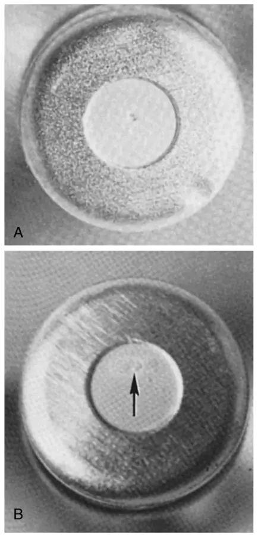
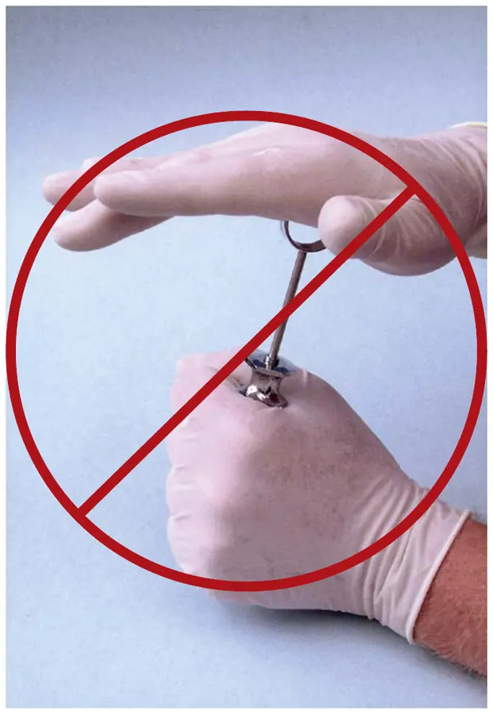

نسخه استخراجشده؛ ترجمه یا تأیید علمی انجام نشده است. وضعیت: captured
دستیار اول سوزن را روی سرنگ پیچانده، بعد کارپول را جا انداخته و برای نشاندن هارپون با کف دست به حلقهی شست ضربه زده است. حین تزریق، بیمار از طعم تلخ در دهانش میگوید. ایراد از کجا شروع شد؟

ترتیب درست برای سرنگ فلزی یا پلاستیکی کارپولی (breech-loading):
پیش از جا انداختن، کلاهک آلومینیومی و دیافراگم کارپول را روی گازی بکش که با ایزوپروپیل الکل ۹۱٪ یا اتیل الکل ۷۰٪ نمدار شده است. کارپول ترکخورده، لبپریده، با لاستیک بیرونزده یا کلاهک آسیبدیده را کنار بگذار.
در بسیاری از مطبها عادت این است که اول سوزن را ببندند و بعد کارپول را بگذارند. در این ترتیب برای نشاندن هارپون باید محکم به پیستون ضربه زد. نتیجه: کارپول شیشهای ترکخورده یا شکسته، یا نشت محلول به دهان بیمار حین تزریق. ترتیب «اول کارپول، بعد سوزن» این خطر را تقریباً از بین میبرد.

نکتهی طلایی: اگر نشاندن هارپون جز با فشار زیاد ممکن نیست، کل سطح شیشهای کارپول را با دست دیگر بپوشان تا اگر شیشه شکست، خردهاش به تو نخورد.